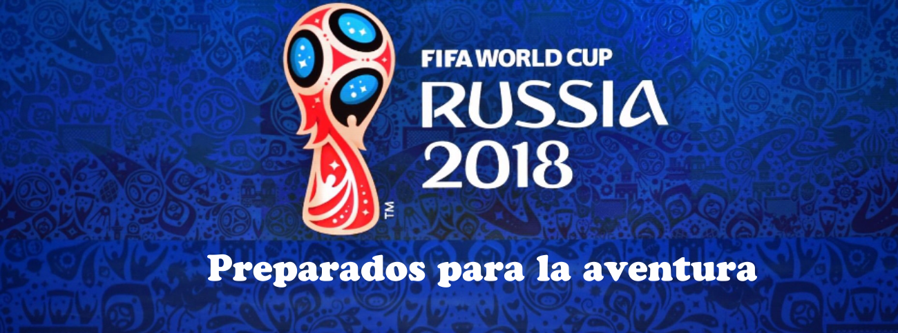

Enero
18 eneroComisión de Gobernanza (Zurich)
26 eneroComisión de Desarrollo (Zurich)
30 enero - 10 febreroUEFA FUTSAL EURO 2018 (Eslovenia)
Febrero
30 enero - 10 febreroUEFA FUTSAL EURO 2018 (Eslovenia)
06 - 18 febreroAFC Futsal Championship 2018 (Chinese Taipei)
20 febreroBureau de la Comisión de Desarrollo (Zurich)
28 febreroComisión de Grupos de Interés del Fútbol (Zurich)
Marzo
08 marzoSorteo oficial CMFFSUB20 (France)
14 marzoComisión de Finanzas
15 - 16 marzoSesión del Consejo de la FIFA (Bogotà)
19 - 27 marzoOfficial or Friendly Matches
20 marzoBureau de la Comisión de Desarrollo (Zurich)
27 marzoComisión de Auditoría y Conformidad (Zurich)
Abril
7 abrilBureau de la Comisión de Desarrollo (Zurich)
Mayo
15 mayoComisión de Auditoría y Conformidad (Zurich)
29 mayoComisión de Desarrollo (Zurich)
30 mayoSorteo oficial CMFFSUB17 (Zurich)
30 mayoComisión de Finanzas (Zurich)
Junio
10 junioSesión del Consejo de la FIFA (Moscow)
12 - 13 junioCongreso de la FIFA (Moscow)
14 junio - 15 julioCopa Mundial de la FIFA Rusia 2018 (Rusia)
20 junioBureau de la Comisión de Desarrollo (Zurich)
23 junio - 03 julioFootball for Hope Festival (Moscow)
Julio
14 junio - 15 julioCopa Mundial de la FIFA Rusia 2018 (Rusia)
23 junio - 03 julioFootball for Hope Festival (Moscow)
10 julioBureau de la Comisión de Desarrollo (St. Petersburg)
Agosto
05 - 24 agostoCopa Mundial Femenina Sub-20 de la FIFA Francia 2018 (France)
14 agostoBureau de la Comisión de Desarrollo (Zurich)
Setiembre
25 septiembreComisión de Auditoría y Conformidad (Zurich)
26 septiembreComisión de Finanzas (Zurich)
27 septiembreComisión de Desarrollo (Zurich)
Octubre
16 octubreBureau de la Comisión de Desarrollo (Zurich)
25 - 26 octubreSesión del Consejo de la FIFA
Noviembre
13 noviembre - 01 diciembreCopa Mundial Femenina Sub-17 de la FIFA Uruguay 2018 (Uruguay)
13 noviembreBureau de la Comisión de Desarrollo (Zurich)
Diciembre
13 noviembre - 01 diciembreCopa Mundial Femenina Sub-17 de la FIFA Uruguay 2018 (Uruguay)
11 diciembreComisión de Auditoría y Conformidad
12 - 22 diciembreCopa Mundial de Clubes de la FIFA EAU 2018 (United Arab Emirates)
12 diciembreComisión de Finanzas
13 diciembreBureau de la Comisión de Desarrollo